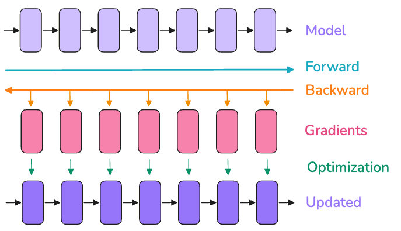
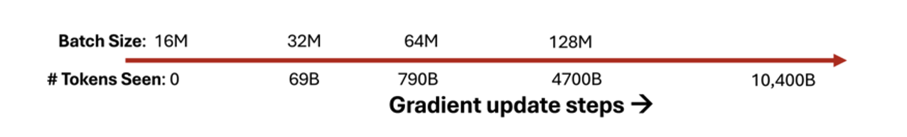
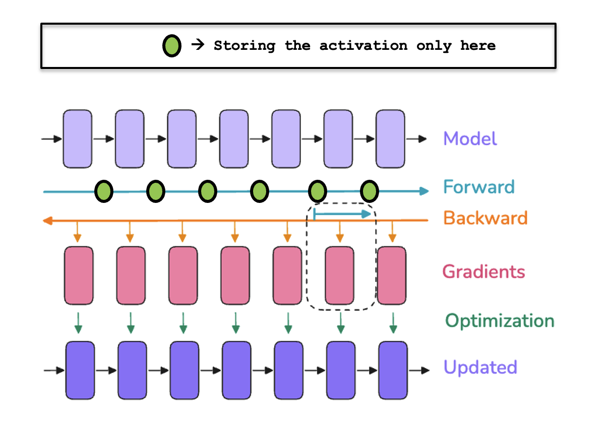

Introduction
Assume that you are preparing for a marathon. If you plot your performance versus amount of training hours you put in, the relationship is non-linear, performance gains begin to diminish after a certain point (as we will hit the human capacity).

This concept holds true for LLMs as well. For example, in the LLaMA family (shown below), as the model size increases, the performance improves but the training time increases. The size of the circle represents the size of the model. And here we can see that as the model size increases, the performance improves but the training time increases.

But then it requires more training. The number of GPU hours required for training are really huge. If you see the y-axis, it is measured in millions of GPU hours. So how are we supposed to do it in one lifetime if we were to do it on one GPU? It is not feasible.
So, we need to focus on how we can efficiently exploit multiple GPUs using different forms of parallelism. And in this blog, we will look at how to do that and what are the different forms of parallelism available and how we can implement them from scratch using PyTorch and later on we will use Ray to scale the training.
Deep Learning Training Basics
Before diving into scaling, let’s quickly review the standard model training loop, such as a simple Multi-Layer Perceptron (MLP):
1 model = MLP().to(device)
2 optimizer = Adam(model.parameters())
3 criterion = CrossEntropyLoss()
4 data_loader = DataLoader(dataset)
5
6 for epoch in range(num_epochs):
7 model.train()
8 for inputs, targets in data_loader:
9 # 1. Move batch to GPU
10 inputs, targets = inputs.to(device), targets.to(device)
11
12 # 2. Clear gradients
13 optimizer.zero_grad()
14
15 # 3. Forward pass
16 outputs = model(inputs)
17 loss = criterion(outputs, targets)
18
19 # 4. Backpropagation
20 loss.backward()
21
22 # 5. Optimization
23 optimizer.step()In a typical training loop, after defining the model, the optimizer, the loss function, and the data loader, the training loop trains the model by performing the following steps for each epoch:
- Iterate over the data in mini-batches (
line 6-8). - Move each batch of data to the GPU (
line 9-10). - Zero out any previous gradients (
line 12-13). - Perform a forward pass to calculate the model outputs and loss (
line 15-17). - Compute gradients through backpropagation (
line 18-19). - Update the model parameters using the optimizer (
line 20-21).

This pattern is the core of most deep learning training routines.
Bottlenecks in Single-GPU Training
When training deep learning models on a single GPU, high-bandwidth memory (HBM) is utilized by four main types of data:
Model Parameters (\(\Phi\)):
The weights being learned during training.Parameter Gradients (\(\nabla \Phi\)):
The gradients computed during backpropagation, required for parameter updates.Optimizer States (\(\Phi_{\text{optim}}\)):
Auxiliary variables needed by the optimization algorithm, such as momentum and variance estimates (e.g., in Adam).Activations (\(\mathcal{M}_{\text{act}}\)):
The intermediate outputs from each neural network layer required to compute gradients during the backward pass.
Of these, the first three (Parameters, Gradients, and Optimizer States) are considered static components. They collectively define the minimum “static” memory footprint determined by the model architecture itself.
The fourth component, Activations, is dynamic and its memory footprint depends on the input size (such as batch size and sequence length). Thus, activations often become the main bottleneck in large-scale training.
Static Memory
And when we are training if you look at the training loop again, until step optimizer.step(), we need to keep everything in the memory. And after optimizer.step(), we can discard the activations and the gradients. And we can keep the model parameters and the optimizer states in the memory.
If \(\Psi\) is the total number of parameters in the model, the total static memory required (\(\mathcal{M}_{static}\)) using the Adam optimizer is a fixed amount: \(16\Psi\) bytes.
| Component | Precision | Size (\(\Psi\) Bytes) | Rationale |
|---|---|---|---|
| Model Parameters | BF32 (4 bytes) | \(4\Psi\) | Used for forward and backward passes |
| Parameter Gradients | BF32 (4 bytes) | \(4\Psi\) | Used in backpropagation |
| Optimizer States (Adam) | FP32 (4+4 bytes) | \(8\Psi\) | Stores 1st and 2nd moment estimates (\(4\Psi\) each) |
| Total Static Memory | \(16\Psi\) | The absolute floor for static storage |
Adam maintains two additional FP32 (4-byte) tensors per parameter: the first moment (mean of gradients, \(m\)) and the second moment (uncentered variance, \(v\)). Thus, for each parameter, Adam stores \(4\) bytes for \(m\) and \(4\) bytes for \(v\), totaling \(8\Psi\) bytes.
And when it comes to training a model, its all about how smartly we can manage this memory footprint. In modern LLM training, mixed precision is employed, typically using BF16 (2 bytes) for fast computation while maintaining a full-precision FP32 (4 bytes) copy of weights and optimizer states for numerical stability.
Mixed Precision Training accelerates deep learning and reduces memory use by combining 16-bit (BF16/FP16) and 32-bit (FP32) floating-point operations.
- How it works: Forward and backward passes use low-precision (e.g., BF16) for parameters and activations, while a full-precision FP32
mastercopy of weights and optimizer states is kept for numerical stability. - Why it matters: Enables training of larger models or larger batches within the same hardware footprint. Mixed precision is now standard in large-scale model training.
So, with mixed precision, the breakdown is as follows:
| Component | Precision | Size (\(\Psi\) Bytes) | Rationale |
|---|---|---|---|
| Model Parameters | BF16 (2 bytes) | \(2\Psi\) | Used for forward and backward passes |
| Parameter Gradients | BF16 (2 bytes) | \(2\Psi\) | Used in backpropagation |
| Master Weights | FP32 (4 bytes) | \(4\Psi\) | Full precision copy for the update step |
| Optimizer States (Adam) | FP32 (4+4 bytes) | \(8\Psi\) | Stores 1st and 2nd moment estimates (\(4\Psi\) each) |
| Total Static Memory (with Mixed Precision) | \(16\Psi\) | The absolute floor for static storage |
You might notice that the total static memory remains \(16\Psi\) bytes. So what is the advantage of mixed precision training?
The key benefits of mixed precision are:
- Increased Training Speed: As we are using lower-precision data types (like BF16) during forward and backward passes, computation is faster and less memory bandwidth is used.
- Reduced Activation Memory: Since our model parameters and optimizer states are stored in FP32, the activations, which are stored in BF16 during training, require half the memory compared to FP32, so the dynamic (activation) memory footprint is significantly lower.
While the absolute static memory is unchanged, mixed precision allows for faster training and greater memory efficiency, especially for storing activations, enabling larger models or batches to fit within the same hardware limits.
And this calculation reveals a significant challenge: a 70 Billion parameter model requires approximately \(70\text{B} \times 16 \text{ bytes} \approx 1120 \text{ GB}\) of static memory. With high-end GPUs typically offering only \(80 \text{ GB}\) of memory, loading even the static state of the model becomes impossible, without considering the dynamic activations.
Dynamic Memory
This component is dependent on the input batch and is the primary cause of memory bottlenecks.
Activations: The output of each layer. They must be stored until the backward pass to compute the gradients.
- For a linear layer \(y=Wx\), the gradient for \(W\) is calculated as: \[\frac{\partial L}{\partial W} = \frac{\partial L}{\partial y} \cdot x^T\]
- This requires saving the layer’s input, \(x\) (the activation from the previous layer).
Activation Memory Equation: The total memory required for activations (\(m_{act}\)) in mixed precision can be estimated by the following equation: \[\mathcal{M}_{\text{act}} = L \cdot \text{seq} \cdot \text{bs} \cdot h \cdot \left(34 + \frac{5 \cdot n_{heads} \cdot \text{seq}}{\text{h}}\right)\]
Where:
- \(L\): Number of layers
- \(\text{seq}\): Sequence length
- \(\text{bs}\): Batch size (number of samples)
- \(h\): Hidden dimension of the model
- \(n_{heads}\): Number of attention heads

As we can see, activation memory usage is not static for a given model; it scales:
- Linearly with the batch size (\(\text{bs}\))
- Quadratically with the sequence length (\(\text{seq}\))
And this quadratic scaling with \(\text{seq}^2\) (an effect stemming from the attention matrix) means the activation memory is the part that will blow up when you increase the batch size or train with longer sequences.
Batch Size Intuition
So, as we can see that the longer the sequence, the more activations we need and hence the more memory we need. So, even for one single sequence, the memory required is more than 50 GB. And this is a significant challenge for training large models.
When we talk about batch size in LLM pre-training, we usually refer to it in terms of the number of tokens, not the number of sequences. That is, the token batch size is calculated as sequence length × number of sequences (micro-batch size)
Typically, the global batch size used in pre-training is extremely large—usually in the millions of tokens. And in practice, we start the training with a smaller batch size and gradually increase it over the course of training.
- Small Batch Size: Used at the beginning of training when the loss is high. It provides quick, noisy signals that help the model traverse the loss landscape rapidly toward the minima.
- Large Batch Size: Used as training approaches the optima. It provides a more accurate gradient direction (a clearer signal), which reduces noise and ensures confident, stable convergence.

Memory usage in Transformer
To get a sense of the memory usage in a Transformer, let’s take a look at the memory usage of Llama 3.1 {8B, 70B and 13B} models.

From this graph, we can clearly see that forshort sequences (or small batch sizes), memory usage for activations is almost negligible, but from around 4K-16K tokens they start to take up a significant amount of memory (this is because of the quadratic scaling with the sequence length, which we discussed earlier), while usage for parameters, gradients, and optimizer states is roughly independent of the sequence length and batch size.
How can we solve this problem of activation explosion? Can we somehow avoide storing all those activations ?
Solution 1: Activation Recomputation
Recall why we need to store all those activations in the first place ? It is because we need to compute the gradients for the model parameters. So, if we can somehow avoid storing all those activations, we can save a lot of memory.
One effective approach is Gradient Checkpointing also known as Activation Recomputation. With this technique, we discard most of the activations during the forward pass to save memory and recompute them on the fly during the backward pass when gradients are needed.
Normally, we’d store every hidden state between learnable operations (like feedforward layers, layer norm, etc.) to use them during the backward pass. With activation recomputation, we only store activations at specific checkpoints and recalculate everything else during backpropagation. This helps us manage memory while training large models. The process typically looks like this:

But as we know in life, there is no free lunch. Although we save memory by discarding most of the activations during the forward pass, we spend some extra compute to recompute these activations on the fly during the backward pass.
There are a few ways to do activation checkpointing, and each involves different memory and compute tradeoffs.
The most aggressive approach is called Full Activation Checkpointing, where you only store activations at the end of each layer (instead of storing every intermediate activation). This method is great for memory since you’re keeping so little, but it’s the most compute-heavy, often increasing computation time by 30–40% because you have to recompute almost everything during backpropagation.
But do we really need to treat every part of the model the same? By profiling, we find that the main memory culprit is the activations from the Multi-Headed Attention (MHA) layers, since they scale quadratically with sequence length.
This leads to a more balanced strategy: Selective Checkpointing. Here, we only skip storing activations for the heavy MHA layers and still store them for the lighter MLP layers. The payoff is impressive: up to 70% memory savings for only about 2.7% extra computation.
As you can see the graph bellow, on an 8-billion parameter model with a batch size of 1 and sequence length 4096, activation memory without any checkpointing can hit 97 GB, which is enough to break most GPUs. With selective activation checkpointing, that drops to 17 GB. And with full checkpointing, at the extreme, memory usage can go down to just 1 GB!

Now that we’ve learned about recomputation, we can tame the activation memory usage we saw in the previous graphs!
However, activations still have a linear dependence on the batch size, so as we move to larger batch sizes this might become an issue again. Fortunately, we have a second tool in our box - gradient accumulation to the rescue!
Solution 2: Gradient Accumulation
Another effective approach is Gradient Accumulation which is a technique that allows us to accumulate gradients over multiple micro-batches before performing a single global optimization step. This is particularly useful when we have a large batch size and we want to avoid running out of memory.
The general idea is to split the batch into smaller micro-batches and process them one by one. We compute the gradients for each micro-batch and accumulate them (we do not do optimizer.step() after each micro-batch). And after processing all the micro-batches, we perform a single global optimization step.
Let’s take an example of a simple linear regression model:
Let’s use a different analogy: predicting the score of a student on a test based on two factors—the number of hours studied (\(x_1\)) and the number of hours slept the night before (\(x_2\)). We assume a simple linear relationship between these inputs and the output score:
\[ \text{score}_{pred} = x_1 w_1 + x_2 w_2 + b \]
Our aim is to use stochastic gradient descent to determine the best values for \(w_1\), \(w_2\), and \(b\) such that the mean squared error (MSE) between the actual score (\(\text{score}_{target}\)) and the predicted score (\(\text{score}_{pred}\)) is minimized:
\[ \underset{w_1, w_2, b}{\mathrm{argmin}} \; (\text{score}_{pred} - \text{score}_{target})^2 \]
Without gradient accumulation, we would update the parameters after each batch of student’s data. See the code bellow:
1 def train_no_accumulate(params: ModelParameters,
2 num_epochs: int = 10,
3 learning_rate: float = 1e-3):
4 for epoch in range(1, num_epochs + 1):
5 for (x1, x2), y_target in training_data:
6
7 # Calculate the output of the model
8 z1 = x1 * params.w1
9 z2 = x2 * params.w2
10 y_pred = z1 + z2 + params.b
11 loss = (y_pred - y_target) ** 2
12
13 # Calculate the gradients of the loss w.r.t. the parameters
14 loss.backward()
15
16 # Update the parameters (at each iteration)
17 with torch.no_grad():
18 # Equivalent to calling optimizer.step()
19 params.w1 -= learning_rate * params.w1.grad
20 params.w2 -= learning_rate * params.w2.grad
21 params.b -= learning_rate * params.b.grad
22
23 # Reset the gradients to zero
24 # Equivalent to calling optimizer.zero_grad()
25 params.w1.grad.zero_()
26 params.w2.grad.zero_()
27 params.b.grad.zero_()With gradient accumulation, instead of updating the parameters after each batch of data, we accumulate gradients across several micro-batches (let’s say 3) and then update all at once. This allows us to train with larger effective batch sizes even if memory is limited. See the code bellow, where we use a micro_batch_size = 3:
1 def train_accumulate(params: ModelParameters,
2 num_epochs: int = 10,
3 learning_rate: float = 1e-3,
4 micro_batch_size: int = 3):
5
6 for epoch in range(1, num_epochs + 1):
7 for index, ((x1, x2), y_target) in enumerate(training_data):
8
9 # Calculate the output of the model
10 z1 = x1 * params.w1
11 z2 = x2 * params.w2
12 y_pred = z1 + z2 + params.b
13 loss = (y_pred - y_target) ** 2
14
15 # Accumulate gradients
16 loss.backward()
17
18 # If we have processed 3 micro-batches OR reached the end of the dataset
19 if (index + 1) % micro_batch_size == 0 or index == len(training_data) - 1:
20 with torch.no_grad():
21 # Equivalent to optimizer.step()
22 params.w1 -= learning_rate * params.w1.grad
23 params.w2 -= learning_rate * params.w2.grad
24 params.b -= learning_rate * params.b.grad
25
26 # Reset the gradients = optimizer.zero_grad()
27 params.w1.grad.zero_()
28 params.w2.grad.zero_()
29 params.b.grad.zero_()

Gradient accumulation allows us to reduce activation memory, which grows linearly with batch size, by processing smaller micro-batches sequentially. This reduces stored activations and gradients since only one micro-batch’s worth of activations needs to be kept in memory at a time, which helps reduce the overall activation memory footprint.
Again there is no free lunch. As gradient accumulation requires multiple consecutive forward/backward passes per optimization step, it increases the compute overhead and slows down training.
So far, we’ve seen how techniques like gradient checkpointing and gradient accumulation help deal with the memory blowup issue caused by activations—the dynamic part of memory usage. Both allow us to fit larger models or batches on a single GPU, but mostly by working sequentially and slowing down training. However, these don’t address the static memory required for parameters, gradients, and optimizer states, nor do they fully utilize available hardware.
To tackle this, we can scale training across multiple GPUs using Data Parallelism. By splitting micro-batches and processing them simultaneously on several GPUs, we address both memory and compute bottlenecks, and that is what we will discuss in the next section.